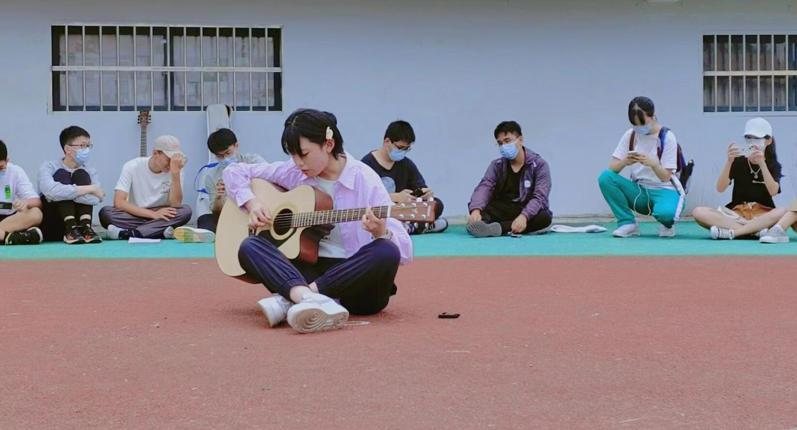

关于我
我的爱好广泛，平时喜欢在音乐世界放松自我，无论是课间、回家路上还是漫步在无人的大街上， 我总会通过唱歌释放自己的压力、抒发自己的情绪，平时在家或者宿舍也会自己弹弹吉他，自学自弹 感觉还蛮有成就感的；我虽然不会跳舞，但我也喜欢舞动起来，有时候气氛到了，或者是比较活跃的音乐现场 我总会不自觉地跟着旋律动起来，不论怎样，开心就好；我还喜欢拍拍照片、拍拍视频，在平凡无趣的生活中 寻找并记录自己或他人的点点滴滴，有时候回过头翻相册还真的是一种乐趣。

我的爱好广泛，平时喜欢在音乐世界放松自我，无论是课间、回家路上还是漫步在无人的大街上， 我总会通过唱歌释放自己的压力、抒发自己的情绪，平时在家或者宿舍也会自己弹弹吉他，自学自弹 感觉还蛮有成就感的；我虽然不会跳舞，但我也喜欢舞动起来，有时候气氛到了，或者是比较活跃的音乐现场 我总会不自觉地跟着旋律动起来，不论怎样，开心就好；我还喜欢拍拍照片、拍拍视频，在平凡无趣的生活中 寻找并记录自己或他人的点点滴滴，有时候回过头翻相册还真的是一种乐趣。
当然啦，我还喜欢和朋友们一起出去玩，一起探索新的地方，一起分享快乐和感动。 每一次旅行都是一次难忘的经历，让我更加珍惜和感恩生活中的每一个瞬间。 总的来说，我的兴趣爱好丰富多样，每一个都让我感到快乐和满足。 它们是我生活中的调味剂，让我更加热爱这个世界，更加期待未来的每一天！
-唱歌的我-
-弹吉他的我-
-享受旅游的我-
-爱拍照的我-
